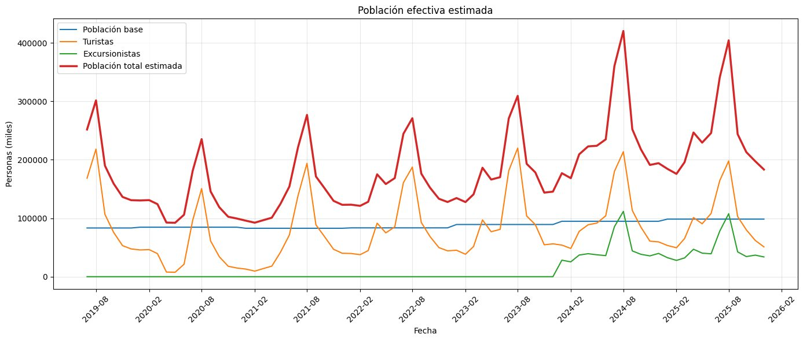
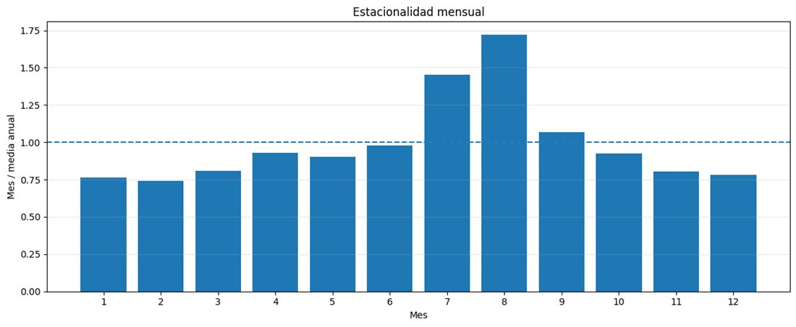
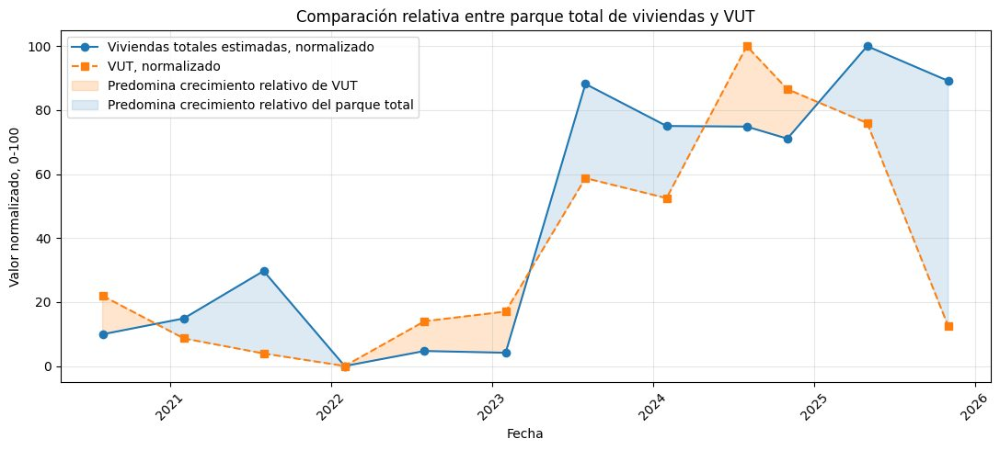
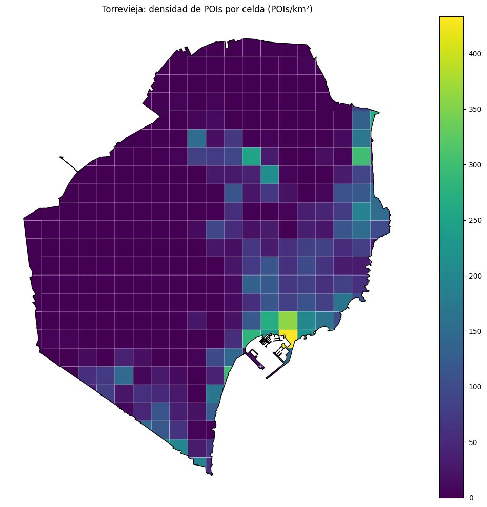

Población real de un destino turístico
En Torrevieja, el padrón no dice cuánta gente hay realmente en la ciudad. Estimo la población efectiva de cada mes cruzando fuentes oficiales, mido su estacionalidad y la presión sobre los recursos, y señalo qué datos faltan para medirla bien.
- Fuentes
- Padrón (INE) · FRONTUR · vivienda turística (INE y GVA) · OpenStreetMap
- Pico
- Agosto · ≈ 317.000 personas de media
- Valle
- Febrero · ≈ 136.000
- Pico / valle
- 2,33 ×
Reto 1 · Población efectiva
La estimación mensual parte del padrón y suma los turistas nacionales e internacionales alojados. Como también hay excursionistas que no pernoctan pero consumen recursos, los aproximo aplicando a Torrevieja la proporción nacional entre excursionistas y turistas de FRONTUR:
total(mes) = padrón + turistas(mes) · (1 + excursionistas ÷ turistas en España)

La mayor dificultad no es solo que falten datos, sino evitar contar a la misma persona dos veces al combinar fuentes que se solapan.
Retos 2 a 4 · Estacionalidad, vivienda turística y presión



Qué datos faltan
La segunda parte del trabajo fue tan importante como la primera: identificar qué no se puede responder con los datos actuales.
- Población presente por día, a partir de registros de movilidad y ocupación.
- Una base única de viviendas turísticas con altas, bajas, dirección exacta y ocupación real.
- Consumo de agua, residuos y aforo de playas por día y zona para medir la presión ambiental.
Python · pandas · GeoPandas · OSMnx · Plotly